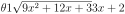

Section 6.13 More Integration Examples
Exercises 6.13.1 Exercises
Recall that we are using \(\log x\) to denote the logarithm of \(x\) with base \(e\text{.}\) In other courses it is often denoted \(\ln x\text{.}\)
1.
Match the integration method to a common kind of integrand it's used to antidifferentiate.
| (A) \(u\)-substitution | (I) | a function multiplied by its derivative |
| (B) trigonometric substitution | (II) | a polynomial times an exponential |
| (C) integration by parts | (III) | a rational function |
| (D) partial fractions | (IV) | the square root of a quadratic function |
Each option in each column should be used exactly once.
(A)–(I), (B)–(IV), (C)–(II), (D)–(III)
(A) Note \(\int f'(x)f(x)\ \dee{x} = \int u\ \dee{u} \) if we substitute \(u=f(x)\text{.}\) This is the kind of integrand described in (I). It's quite possible that a \(u\)-substitution would work on the others, as well, but (I) is the most reliable kind of integrand for a \(u\)-substitution.
(B) A trigonometric substitution usually allows us to cancel out a square root containing a quadratic function, as in (IV).
(C) We can often antidifferentiate the product of a polynomial with an exponential function using integration by parts: see Examples 6.7.1, 6.7.6. If we let \(u\) be the polynomial function and \(\dee{v}\) be the exponential, as long as we can antidifferentiate \(\dee{v}\text{,}\) we can repeatedly apply integration by parts until the polynomial function goes away. So, we go with (II)
(D) We apply partial fractions to rational functions, (III).
Note: without knowing more about the functions, there's no guarantee that the methods we chose will be the best methods, or even that they will work (with the exception of (I)). With practice, you gain intuition about likely methods for different integrals. Luckily for you, there's lots of practice below.
2.
Evaluate \(\displaystyle\int_0^{{\pi}/{2}} \sin^4 x \cos^5 x \dee{x}\text{.}\)
The integrand is the product of sines and cosines. See how this was handled with a substitution in Section 6.8.1.
After your substitution, you should have a polynomial expression in \(u\)—but it might take some simplification to get it into a form you can easily integrate.
\(\dfrac{1}{5}-\dfrac{2}{7}+\dfrac{1}{9} =\dfrac{8}{315}\)
The integrand is a product of powers of sine and cosine. Since cosine has an odd power, we want to substitute \(u=\sin x\text{,}\) \(\dee{u}=\cos x \dee{x}\text{.}\) Therefore, we should:
- reserve one cosine for the derivative of sine in our substitution, and
- change the rest of the cosines to sines using the identity \(\sin^2x+\cos^2x=1\text{.}\)
3.
Evaluate \(\displaystyle\int \sqrt{3-5x^2}\dee{x}\text{.}\)
We notice that the integrand has a quadratic polynomial under the square root. If that polynomial were a perfect square, we could get rid of the square root: try a trig substitution, as in Section 6.9.
The identity \(\sin(2\theta)=2\sin\theta\cos\theta\) might come in handy.
\(\dfrac{3}{2\sqrt{5}} \arcsin\left(x\sqrt{\dfrac{5}{3}}\right) + \dfrac{x}{2}\sqrt{3-5x^2} +C\)
We notice that there is a quadratic equation under the square root. If that equation were a perfect square, we could get rid of the square root: so we'll mould it into a perfect square using a trig substitution.
Our candidates will use one of the following identities:
We'll be substituting \(x=\)(something), so we notice that \(3-5x^2\) has the general form of (constant)\(-\)(function), as does \(1-\sin^2\theta\text{.}\) In order to get the constant right, we multiply through by three:
Our goal is to get \(3-5x^2=3-3\sin^2\theta\text{;}\) so we solve this equation for \(x\) and decide on the substitution
Now we evaluate our integral.
From our substitution \(x=\sqrt{3/5}\sin\theta\text{,}\) we glean \(\sin\theta = x\sqrt{5/3}\text{,}\) and \(\theta = \arcsin \left(x\sqrt{5/3} \right)\text{.}\) To figure out \(\cos\theta\text{,}\) we draw a right triangle. Let \(\theta\) be one angle, and since \(\sin\theta = \dfrac{x\sqrt{5}}{\sqrt{3}}\text{,}\) we let the hypotenuse be \(\sqrt{3}\) and the side opposite \(\theta\) be \(x\sqrt{5}\text{.}\) By Pythagorus, the missing side (adjacent to \(\theta\)) has length \(\sqrt{3-5x^2}\text{.}\)
Therefore, \(\cos\theta = \frac{\mbox{adj}}{\mbox{hyp}} = \dfrac{\sqrt{3-5x^2}}{\sqrt{3}}\text{.}\) So our integral evaluates to:
4.
Evaluate \(\displaystyle\int_0^\infty \dfrac{x-1}{e^x}\dee{x}\text{.}\)
Notice the integral is improper. When you compute the limit, l'Hôpital's rule might help.
If you're struggling to think of how to antidifferentiate, try writing \(\dfrac{x-1}{e^x} = (x-1)e^{-x}\text{.}\)
0
First, we note the integral is improper. So, we'll need to replace the top bound with a variable, and take a limit. Second, we're going to have to antidifferentiate. The integrand is the product of an exponential function, \(e^{-x}\text{,}\) with a polynomial function, \(x-1\text{,}\) so we use integration by parts with \(u=x-1\text{,}\) \(\dee{v}=e^{-x}\dee{u}\text{,}\) \(\dee{u}=\dee{x}\text{,}\) and \(v = -e^{-x}\text{.}\)
(In the equality marked (\(*\)), we used l'Hôpital's rule.)
So, \(\displaystyle\int_0^\infty \dfrac{x-1}{e^x}\dee{x}=0\text{.}\)
Remark: this shows that, interestingly, \(\displaystyle\int_0^\infty \dfrac{x}{e^x}\dee{x}=\displaystyle\int_0^\infty \dfrac{1}{e^x}\dee{x}\text{.}\)
5.
Evaluate \(\displaystyle\int \frac{-2}{3x^2+4x+1}\dee{x}\text{.}\)
Which method usually works for rational functions (the quotient of two polynomials)?
\(\log\left|\dfrac{x+1}{3x+1}\right|+C\)
-
Solution 1: Notice the denominator factors as \((x+1)(3x+1)\text{.}\) Since the integrand is a rational function (the quotient of two polynomials), we can use partial fraction decomposition.
\begin{align*} \frac{-2}{3x^2+4x+1}&=\frac{-2}{(x+1)(3x+1)}\\ &=\frac{A}{x+1}+\frac{B}{3x+1}\\ &=\frac{A(3x+1)+B(x+1)}{(x+1)(3x+1)}\\ &=\frac{(3A+B)x+(A+B)}{(x+1)(3x+1)}\\ \end{align*}So:
\begin{align*} -2&=(3A+B)x+(A+B)\\ 0&=3A+B \mbox{ and }-2=A+B\\ B&=-3A \mbox{ and hence } -2=A+(-3A)\\ {\color{red}{A}}&{\textcolor{red}{=1}} \mbox{ so then } {\color{red}{B=-3}}\\ \end{align*}So now:
\begin{align*} \frac{-2}{3x^2+4x+1}&=\frac{1}{x+1}-\frac{3}{3x+1}\\ \int \frac{-2}{3x^2+4x+1}\dee{x}&=\int\left(\frac{1}{x+1}-\frac{3}{3x+1}\right)\dee{x}\\ &=\log|x+1|-\log|3x+1|+C\\ &=\log\left|\dfrac{x+1}{3x+1}\right|+C \end{align*} -
Solution 2: The previous solution is probably the nicest. However, for the foolhardy or the brave, this integral can also be evaluated using trigonometric substitution.
We start by completing the square on the denominator.
\begin{align*} 3x^2+4x+1 &= 3\left(x^2+\frac{4}{3}x+\frac{1}{3}\right)\\ &=3\left(x^2+2\cdot\frac{2}{3}x+\frac{4}{9}-\frac{4}{9}+\frac{1}{3}\right)\\ &=3\left(\left(x+\frac{2}{3}\right)^2-\frac{4}{9}+\frac{3}{9}\right)\\ &=3\left(\left(x+\frac{2}{3}\right)^2-\frac{1}{9}\right)\\ &=3\left(x+\frac{2}{3}\right)^2-\frac{1}{3}\\ \end{align*}This has the form of a function minus a constant, which matches the trigonometric identity \(\sec^2\theta - 1 = \tan^2\theta\text{.}\) Multiplying through by \(\frac{1}{3}\text{,}\) we see we can use the identity \(\frac{1}{3}\sec^2\theta - \frac{1}{3} = \frac{1}{3}\tan^2\theta\text{.}\) So, to get the substitution right, we want to choose a substitution that makes the following true:
\begin{align*} 3\left(x+\frac{2}{3}\right)^2-\frac{1}{3}&=\frac{1}{3}\sec^2\theta-\frac{1}{3}\\ 3\left(x+\frac{2}{3}\right)^2&=\frac{1}{3}\sec^2\theta\\ 9\left(x+\frac{2}{3}\right)^2&=\sec^2\theta\\ \color{red}{3x+2}&=\color{blue}{\sec\theta}\\ \end{align*}And, accordingly:
\begin{align*} \color{red}{3\dee{x}}&=\color{blue}{\sec\theta\tan\theta \dee{\theta}} \end{align*}Now, let's simplify a little and use this substitution on our integral:
\begin{align*} \amp\int\dfrac{-2}{3x^2+4x+1}\dee{x} =\int\dfrac{-2}{3\left(x+\frac{2}{3}\right)^2-\frac{1}{3}}\dee{x}\\ &\hskip0.5in=\int\dfrac{-2}{9\left(x+\frac{2}{3}\right)^2-1}3\dee{x}\\ &\hskip0.5in=\int\dfrac{-2}{\left({\color{red}{3x+2}}\right)^2-1}\textcolor{red}{3\dee{x}}\\ &\hskip0.5in=\int\dfrac{-2}{\left({\color{blue}{\sec\theta}}\right)^2-1}\color{blue}{\sec\theta\tan\theta \dee{\theta}}\\ &\hskip0.5in=\int\dfrac{-2}{\tan^2\theta}\sec\theta\tan\theta \dee{\theta}\\ &=\hskip0.5in\int -2\dfrac{\sec\theta}{\tan\theta}\dee{\theta}\\ &\hskip0.5in=\int -2\dfrac{1}{\cos\theta}\cdot\dfrac{\cos\theta}{\sin\theta} \dee{\theta}\\ &\hskip0.5in=\int -2\dfrac{1}{\sin\theta} \dee{\theta}\\ &\hskip0.5in=\int -2\csc\theta \dee{\theta}\\ \end{align*}Using the result of Example 6.8.21, or a table of integrals:
\begin{align*} &=2\log\left|\csc\theta+\cot\theta \right|+C \end{align*}Our final task is to translate this back from \(\theta\) to \(x\text{.}\) Recall we used the substitution \(3x+2=\sec\theta\text{.}\) Using this information, and \(\sec\theta = \dfrac{\mathrm{hypotenuse}}{\mathrm{adjacent}}\text{,}\) we can fill in two sides of a right triangle with angle \(\theta\text{.}\) The Pythagorean theorem tells us the third side (opposite to \(\theta\)) has measure \(\sqrt{(3x+2)^2-1}=\sqrt{9x^2-12x+3}\text{.}\)
\begin{align*} \amp 2\log\left|\csc\theta+\cot\theta \right|+C\\ \hskip0.5in&= 2\log\left|\dfrac{3x+2}{\sqrt{9x^2+12x+3}}+\dfrac{1}{\sqrt{9x^2+12x+3}} \right|+C\\ &\hskip0.5in= 2\log\left|\dfrac{3x+3}{\sqrt{9x^2+12x+3}}\right|+C\\ &\hskip0.5in= \log\left|\dfrac{(3x+3)^2}{\sqrt{9x^2+12x+3}^2}\right|+C\\ &\hskip0.5in= \log\left|\dfrac{(3x+3)^2}{9x^2+12x+3}\right|+C\\ &\hskip0.5in= \log\left|\dfrac{9(x+1)^2}{3(3x+1)(x+1)}\right|+C\\ &\hskip0.5in= \log\left|\dfrac{3(x+1)^2}{(3x+1)(x+1)}\right|+C\\ &\hskip0.5in= \log\left|\dfrac{3(x+1)}{3x+1}\right|+C\\ &\hskip0.5in= \log\left|\dfrac{x+1}{3x+1}\right|+\log3+C\\ \end{align*}Since \(C\) is an arbitrary constant, we can write our final answer as
\begin{align*} & \log\left|\dfrac{x+1}{3x+1}\right|+C \end{align*}
6.
Evaluate \(\displaystyle\int_1^2 x^2\log x \dee{x}\text{.}\)
It would be nice to replace logarithm with its derivative, \(\dfrac{1}{x}\text{.}\)
\(\dfrac{8}{3}\log2-\dfrac{7}{9}\)
We see that we have two functions multiplied, but they don't simplify nicely with each other. However, if we differentiate logarithm, and integrate \(x^2\text{,}\) we'll get a polynomial. So, let's use integration by parts.
First, let's antidifferentiate. We'll deal with the limits of integration later.
We use the Fundamental Theorem of Calculus Part 2 to evaluate the definite integral.
\begin{align*} \int_1^2 x^3\log x \dee{x}&= \left[\frac{1}{3}x^3\log x - \frac{1}{9}x^3\right]_1^2\\ &=\left[\frac{1}{3}2^3\log 2 - \frac{1}{9}2^3 \right] - \left[\frac{1}{3}1^3\log 1 - \frac{1}{9}1^3 \right]\\ &=\frac{8\log 2}{3}-\frac{8}{9}-0+\frac{1}{9}\\ &=\frac{8}{3}\log2-\frac{7}{9} \end{align*}7. 2014D.
Evaluate \(\displaystyle\int\frac{x}{x^2-3}\,\dee{x}\text{.}\)
The integrand is a rational function, so it is possible to use partial fractions. But there is a much easier way!
\(\dfrac{1}{2}\log\big|x^2-3\big| + C\)
The derivative of the denominator shows up in the numerator, only differing by a constant, so we perform a substitution. Specifically, substitute \(u=x^2-3\text{,}\) \(\dee{u}=2x\,\dee{x}\text{.}\) This gives
8. 1997A.
Evaluate the following integrals.
- \(\displaystyle \displaystyle\int_0^4\frac{x}{\sqrt{9+x^2}}\,\dee{x}\)
- \(\displaystyle \displaystyle\int_0^{\pi/2}\cos^3x\ \sin^2x\,\dee{x}\)
- \(\displaystyle \displaystyle\int_1^{e}x^3\log x\,\dee{x}\)
You should prepare your own personal internal list of integration techniques ordered from easiest to hardest. You should have associated to each technique your own personal list of signals that you use to decide when the technique is likely to be useful.
(a) \(2\)
(b) \(\dfrac{2}{15}\)
(c) \(\dfrac{3e^4}{16}+\dfrac{1}{16}\)
(a) Although a quadratic under a square root often suggests trigonometric substitution, in this case we have an easier substitution. Specifically, let \(y=9+x^2\text{.}\) Then \(\dee{y}=2x\dee{x},\ x\dee{x}=\frac{\dee{y}}{2},\ y(0)=9,\) and \(y(4)=25\text{.}\)
(b) The power of cosine is odd, so we can reserve one cosine for the differential and change the rest to sines. Substituting \(y=\sin x,\) \(\dee{y}=\cos x\text{,}\) \(\dee{x},\) \(y(0)=0,\) \(y(\pi/2)=1,\) \(\cos^2x=1-y^2\text{:}\)
(c) The integrand is the product of two different kinds of functions, with no obvious substitution or simplification. If we differentiate \(\log x\text{,}\) it will match better with the polynomial nature of the rest of the integrand. So, integrate by parts with \(u(x)=\log x\) and \(\dee{v}=x^3\,\dee{x}\text{,}\) then \(\dee{u}=\frac{1}{x}\,\dee{x}\) and \(v=x^4/4\text{.}\)
9. 1997D.
Evaluate the following integrals.
- \(\displaystyle \displaystyle\int_0^{\pi/2} x\sin x\,\dee{x} \)
- \(\displaystyle \displaystyle\int_0^{\pi/2} \cos^5 x\,\dee{x} \)
Despite both containing a trig function, the two integrals are easiest to evaluate using different methods.
(a) \(1\)
(b) \(\dfrac{8}{15}\)
(a) Integrate by parts with \(u=x\) and \(\dee{v}=\sin x\,\dee{x}\) so that \(\dee{u}=\dee{x}\) and \(v=-\cos x\text{.}\)
So
(b) The power of cosine is odd, so we can reserve one cosine for \(\dee{u}\) and change the rest into sines. Make the substitution \(u=\sin x\text{,}\) \(\dee{u}=\cos x\,\dee{x}\text{.}\)
10. 1998A.
Evaluate the following integrals.
- \(\displaystyle \displaystyle\int_0^2 xe^x\,\dee{x}\)
- \(\displaystyle \displaystyle\int_0^1\frac{1}{\sqrt{1+x^2}}\,\dee{x}\)
- \(\displaystyle \displaystyle\int_3^5\frac{4x}{(x^2-1)(x^2+1)}\,\dee{x}\)
(a) \(e^2+1\)
(b) \(\log(\sqrt{2}+1)\) (c) \(\log\frac{15}{13}\approx 0.1431\)(a) This is a classic integration-by-parts example. If we integrate \(e^x\text{,}\) it doesn't change, and if we differentiate \(x\) it becomes a constant. So, let \(u=x\) and \(\dee{v}=e^x\,\dee{x}\text{,}\) so that \(\dee{u}=\dee{x}\) and \(v=e^x\text{.}\)
(b) We have a quadratic function underneath a square root. In the absence of an easier substitution, we can get rid of the square root with a trigonometric substitution. Substitute \(x=\tan y\text{,}\) \(\dee{x}=\sec^2 y\,\dee{y}\text{.}\) When \(x=0\text{,}\) \(\tan y=0\) so \(y=0\text{.}\) When \(x=1\text{,}\) \(\tan y=1\) so \(y=\frac{\pi}{4}\text{.}\) Also \(\sqrt{1+x^2} =\sqrt{1+\tan^2y}=\sqrt{\sec^2 y}=\sec y\text{,}\) since \(\sec y\ge 0\) for all \(0\le y\le\frac{\pi}{4}\text{.}\)
(c) The integral is a rational function. In the absence of an obvious substitution, we use partial fractions.
Multiplying by the denominator,
Setting \(x=1\) gives \(4a=4\text{,}\) so \(\textcolor{red}{a=1}\text{.}\) Setting \(x=-1\) gives \(-4b=-4\text{,}\) so \(\textcolor{red}{b=1}\text{.}\) Substituting in \(a=b=1\) in (\(*\)) gives:
So,
11. 2000D.
Calculate the following integrals.
- \(\displaystyle \displaystyle\int_0^3\sqrt{9-x^2}\,\dee{x}\)
- \(\displaystyle \displaystyle\int_0^1\log(1+x^2)\,\dee{x}\)
- \(\displaystyle \displaystyle\int_3^\infty\frac{x}{(x-1)^2(x-2)}\,\dee{x}\)
Part (a) can be done by inspection — use a little highschool geometry! Part (b) is reminiscent of the antiderivative of logarithm—how did we find that one out? Part (c) is an improper integral.
(a) \(\dfrac{9}{4}\pi\)
(b) \(\log 2-2+\dfrac{\pi}{2}\approx 0.264\)
(c) \(2\log 2-\half\approx0.886\)
(a) \(\int_0^3\sqrt{9-x^2}\,\dee{x}\) is the area of the portion of the disk \(x^2+y^2\le 9\) that lies in the first quadrant. It is \(\frac{1}{4}\pi 3^3={\frac{9}{4}\pi}\,\text{.}\) Alternatively, you could also evaluate this integral using the substitution \(x=3\sin y\text{,}\) \(\dee{x}=3\cos y\,\dee{y}\text{.}\)
(b) It's not immediately obvious what to do with this one, but remember we found \(\int \log x \dee{x}\) using integration by parts with \(u=\log x\) and \(\dee{v}=\dee{x}\text{.}\) Let's hope a similar trick works here. Integrate by parts, using \(u=\log(1+x^2)\) and \(\dee{v}=\dee{x}\text{,}\) so that \(\dee{u}=\frac{2x}{1+x^2}\,\dee{x}\text{,}\) \(v=x\text{.}\)
(c) The integrand is a rational function with no obvious substitution, so we use partial fractions.
Multiply by the denominator.
Setting \(x=1\) gives \(\textcolor{red}{a=-1}\text{.}\) Setting \(x=2\) gives \(\textcolor{red}{c=2}\text{.}\) Substituting in \(a=-1\) and \(c=2\) gives
Hence
since
12.
Evaluate \(\displaystyle\int\frac{\sin^4\theta-5\sin^3\theta+4\sin^2\theta+10\sin\theta}{\sin^2\theta-5\sin\theta+6}\cos\theta\dee{\theta}\text{.}\)
Use the substitution \(u=\sin\theta\text{.}\)
\(\displaystyle\frac{1}{3}\sin^3\theta-2\sin\theta+12\log\left|\frac{\sin\theta-3}{\sin\theta-2}\right|+C\)
This looks quite a lot like a rational function, but with variable \(\sin\theta\) instead of \(x\text{.}\) So, we use the substitution \(x=\sin\theta\text{,}\) \(\dee{x} = \cos\theta\dee{\theta}\text{.}\)
Since the numerator does not have smaller degree than the denominator, we need to do some long division before we can set up our partial fractions decomposition.
That is,
We use partial fractions decomposition on the rightmost term.
Setting \(x=3\) and \(x=2\) gives us
\begin{align*} \color{red}{B}&\color{red}{=12,\quad A=-12} \end{align*}Now we can evaluate our integral.
13. 2001A.
Evaluate the following integrals. Show your work.
- \(\displaystyle \displaystyle\int_0^{\pi\over 4}\sin^2(2x)\cos^3(2x)\ \dee{x}\)
- \(\displaystyle \displaystyle\int\big(9+x^2\big)^{-{3\over 2}}\ \dee{x}\)
- \(\displaystyle \displaystyle\int\frac{\dee{x}}{(x-1)(x^2+1)}\)
- \(\displaystyle \displaystyle\int x\arctan x\ \dee{x}\)
For (c), try a little algebra to split the integral into pieces that are easy to antidifferentiate.
(a) \(\dfrac{1}{15}\)
(b) \(\dfrac{1}{9}\cdot\dfrac{x}{\sqrt{x^2+9}}+C\)
(c) \(\dfrac{1}{2}\log|x-1|-\dfrac{1}{4}\log(x^2+1)-\dfrac{1}{2}\arctan x+C\)
(d) \(\dfrac12\big[ x^2\arctan x -x +\arctan x\big]+C\)
(a) It doesn't matter to us right now that the arguments of sine and cosine are \(2x\) rather than \(x\text{.}\) This is still the integral of powers of products of sines and cosines. Since cosine has an odd power, we make the substitution \(u=\sin (2x)\text{,}\) \(\dee{u}=2\cos(2 x)\,\dee{x}\text{.}\)
(b) Make the substitution \(x=3\tan t\text{,}\) \(\dee{x}=3\sec^2t\,\dee{t}\) and use the trig identity \(9+9\tan^2 t = 9\sec^2 t\text{.}\)
To convert back to \(x\text{,}\) in the last step, we used the triangle below, which is rigged to have \(\tan t =\frac{x}{3}\text{.}\)
(c) Seeing a rational function with no obvious substitutions, we use partial fractions.
Multiply by the original denominator.
\begin{align*} 1&=a(x^2+1)+(bx+c)(x-1)\tag{$*$} \end{align*}Setting \(x=1\) gives \(2a=1\) or \(\textcolor{red}{a=\half}\text{.}\) Substituting in \(a=\half\) in \((*)\) gives
So,
To antidifferentiate the second piece, we split it into two integrals: one that can be handled with the substitution \(u=x^2+1\text{,}\) and another that looks like the derivative of arctangent.
\begin{align*} &=\int\Big(\frac{1/2}{x-1}-\frac{x/2}{x^2+1} -\frac{1/2}{x^2+1}\Big)\,\dee{x}\cr &=\int\Big(\frac{1/2}{x-1}-\frac{1}{4}\cdot\frac{2x}{x^2+1} -\frac{1/2}{x^2+1}\Big)\,\dee{x}\cr &=\frac{1}{2}\log|x-1|-\frac{1}{4}\log(x^2+1)-\frac{1}{2}\arctan x+C \end{align*}(d) We know the derivative of arctangent, and it would integrate nicely if multiplied to the antiderivative of \(x\text{.}\) So, we integrate by parts with \(u=\arctan x\) and \(\dee{v}=x\,\dee{x}\) so that \(\dee{u}=\frac{1}{1+x^2}\dee{x}\) and \(v=\frac{1}{2} x^2\text{.}\) Then
14. M121 2000A.
Evaluate the following integrals.
- \(\displaystyle \displaystyle\int_0^{\pi/4}\sin^5(2x)\,\cos(2x)\ \dee{x}\)
- \(\displaystyle \displaystyle\int\sqrt{4-x^2}\ \dee{x}\)
- \(\displaystyle \displaystyle\int\frac{x+1}{x^2(x-1)}\ \dee{x}\)
(a) \(\dfrac{1}{12}\)
(b) \(\displaystyle2\sin^{-1}\frac{x}{2}+x\sqrt{1-\frac{x^2}{4}}+C\)
(c) \(\displaystyle-2\log|x|+\frac{1}{x}+2\log|x-1|+C\)
(a) We substitute \(y=\sin(2x)\text{,}\) \(\dee{y}=2\cos(2x)\ \dee{x}\text{.}\) Note \(\sin(2\cdot 0)=0\) and \(\sin(2\cdot\frac{\pi}{4}) = 1.\)
(b) We can get rid of the square root with a trig substitution. Substituting \(x=2\sin y\text{,}\) \(\dee{x}=2\cos y\ \dee{y}\text{,}\)
since \(\sin y =\frac{x}{2}\) and \(\cos y=\sqrt{1-\sin^2y} =\sqrt{1-\frac{x^2}{4}}\text{.}\) Alternately, we can draw a triangle with \(\sin y = \frac{x}{2}\text{,}\) and use the Pythagorean theorem to find the adjacent side.
(c) Seeing a rational function with no obvious substitution, we use the method of partial fractions. The denominator is already completely factored.
Setting \(x=1\) gives us \(\textcolor{red}{C=2}\text{.}\) Setting \(x=0\) gives us \(\textcolor{red}{B=-1}\text{.}\) Furthermore, the coefficient of \(x^2\) on the left hand side (after collecting like terms), namely \(A+C\text{,}\) must be the same as the coefficient of \(x^2\) on the right hand side, namely \(0\text{.}\) So \(A+C=0\) and \(\textcolor{red}{A=-2}\text{.}\) Checking,
as desired. Thus,
15. 2001D.
Calculate the following integrals.
- \(\displaystyle \displaystyle\int_0^\infty e^{-x} \sin(2x)\,\dee{x}\)
- \(\displaystyle \displaystyle\int_0^{\sqrt{2}}\frac{1}{(2+x^2)^{3/2}}\,\dee{x}\)
- \(\displaystyle \displaystyle\int_0^1 x\log(1+x^2)\,\dee{x}\)
- \(\displaystyle \displaystyle\int_3^\infty\frac{1}{(x-1)^2(x-2)}\,\dee{x}\)
(a) \(\displaystyle\frac{2}{5}\)
(b) \(\displaystyle\frac{1}{2\sqrt{2}}\)
(c) \(\displaystyle\log 2-\frac{1}{2}\approx 0.193\)
(d) \(\displaystyle\log 2-\frac{1}{2}\approx0.193\)
(a) Define
We integrate by parts, with \(u=\sin(2x)\) or \(\cos(2x)\) and \(\dee{v}=e^{-x}\,\dee{x}\text{.}\) That is, \(v=-e^{-x}\text{.}\)
Substituting \(I_2=\dfrac12 I_1\) into \(I_2=1-2I_1\) gives \(\dfrac{5}{2}I_1=1\text{,}\) or \(\displaystyle\int_0^\infty e^{-x} \sin(2x)\,\dee{x}=\dfrac{2}{5}\text{.}\)
(b) We can cancel out the square root if we use a trig substitution. Substitute \(x=\sqrt{2}\tan y\text{,}\) \(\dee{x}=\sqrt{2}\sec^2 y\,\dee{y}\text{.}\)
(c)
- Solution 1: Integrate by parts, using \(u=\log(1+x^2)\) and \(\dee{v}=x\,\dee{x}\text{,}\) so that \(\dee{u}=\frac{2x}{1+x^2}\text{,}\) \(v=\frac{x^2}{2}\text{.}\)\begin{align*} \int_0^1 x\log(1+x^2)\,\dee{x} &=\Big[\frac{1}{2} x^2\log(1+x^2)\Big]_0^1-\int_0^1 \frac{x^3}{1+x^2}\,\dee{y}\\ \amp=\frac{1}{2} \log 2 -\int_0^1\Big[x-\frac{x}{1+x^2}\Big]\,\dee{x}\\ &=\frac{1}{2} \log 2 -\Big[\frac{x^2}{2}-\frac{1}{2}\log(1+x^2)\Big]_0^1\\ \amp=\log 2-\frac{1}{2}\approx 0.193 \end{align*}
- Solution 2: First substitute \(y=1+x^2\text{,}\) \(\dee{y}=2x\,\dee{x}\text{.}\)\begin{gather*} \int_0^1 x\log(1+x^2)\,\dee{x} =\frac{1}{2}\int_1^2\log y\ \dee{y} \end{gather*}Then integrate by parts, using \(u=\log y\) and \(\dee{v}=\dee{y}\text{,}\) so that \(\dee{u}=\frac{1}{y}\text{,}\) \(v=y\text{.}\)\begin{align*} \int_0^1 x\log(1+x^2)\,\dee{x} \amp=\frac{1}{2}\int_1^2\log y\ \dee{y}\\ \amp=\Big[\frac{1}{2} y\log y\Big]_1^2-\frac{1}{2}\int_1^2 y\frac{1}{y}\,\dee{y} =\log 2-\frac{1}{2}\\ \amp\approx 0.193 \end{align*}
(d) Seeing a rational function with no obvious substitution, we use partial fractions.
Setting \(x=1\) gives \(\textcolor{red}{a=-1}\text{.}\) Setting \(x=2\) gives \(\textcolor{red}{c=1}\text{.}\) Substituting in \(a=-1\) and \(c=1\) to (\(*\)) gives
Hence:
since
16. 2002A.
Evaluate the following integrals.
- \(\displaystyle \displaystyle\int x\,\log x\ \dee{x}\)
- \(\displaystyle \displaystyle\int\frac{(x-1)\,\dee{x}}{x^2+4x+5}\)
- \(\displaystyle \displaystyle\int\frac{\dee{x}}{x^2-4x+3}\)
- \(\displaystyle \displaystyle\int\frac{x^2\,\dee{x}}{1+x^6}\)
For part (b), first complete the square in the denominator. You can save some work by first comparing the derivative of the denominator with the numerator. For part (d) use a simple substitution.
(a) \(\displaystyle\frac12 x^2\log x -\frac{1}{4} x^2+C\)
(b) \(\displaystyle\frac{1}{2} \log [x^2+4x+5] -3\arctan(x+2)+C\)
(c) \(\displaystyle\frac12\log|x-3|-\frac12\log|x-1|+C\)
(d) \(\displaystyle\frac{1}{3}\arctan x^3 +C\)
(a) Integrate by parts with \(u=\log x\) and \(\dee{v}=x\,\dee{x}\text{,}\) so that \(\dee{u}=\frac{\dee{x}}{x}\) and \(v=\half x^2\text{.}\)
(b) The denominator is an irreducible quadratic, so partial fractions can't get us any further. To integrate a function whose denominator is quadratic, we split the numerator up so that one piece can be evaluated with a \(u\)-substitution, and the other piece looks like arctangent.
For the last step, you can guess the antiderivative, or use the substitutions \(u_1=x^2+4x+5\) and \(u_2=x+2\text{,}\) respectively, for the two integrals.
(c) We use partial fractions.
Setting \(x=3\) gives \(\textcolor{red}{a=\frac{1}{2}}\text{.}\) Setting \(x=1\) gives \(\textcolor{red}{b=-\frac{1}{2}}\text{.}\) So,
(d) Substitute \(y=x^3\text{,}\) \(\dee{y}=3x^2\,\dee{x}\text{.}\)
17. 2013A.
Evaluate the following integrals.
- \(\displaystyle\int_0^1\arctan x\ \dee{x}\text{.}\)
- \(\displaystyle\int\frac{2x-1}{x^2-2x+5}\ \dee{x}\text{.}\)
For part (b), complete the square in the denominator. You can save some work by first comparing the derivative of the denominator with the numerator.
(a) \(\displaystyle\frac{\pi}{4}-\frac{1}{2}\log 2\)
(b) \(\displaystyle\log |x^2-2x+5| +\frac{1}{2}\arctan \frac{x-1}{2} +C\)(a) Integrate by parts with \(u=\arctan x\text{,}\) \(\dee{v}=\dee{x}\text{,}\) \(\dee{u}=\frac{\dee{x}}{1+x^2}\) and \(v=x\text{.}\) This gives
(b) Note that the derivative of the denominator is \(2x-2\text{,}\) which differs from the numerator only by \(1\text{.}\)
In the last step, you can guess the antiderivative, or use the substitutions \(u_1=x^2-2x+5\) and \(u_2=(x-1)/2\text{,}\) respectively.
18. 2014A.
- Evaluate \({\displaystyle \int\frac{x^2}{(x^3 + 1)^{101}}\,\dee{x}}\text{.}\)
- Evaluate \(\displaystyle\int \cos^3\!x\ \sin^4\!x\ \dee{x}\text{.}\)
For part (a), the numerator is the derivative of a function that appears in the denominator.
(a) \(\displaystyle-\frac{1}{300(x^3+1)^{100}} + C\)
(b) \(\displaystyle\frac{\sin^5\!x}{5}-\frac{\sin^7\!x}{7}+C\)
(a) Substituting \(u=x^3+1\text{,}\) \(\dee{u}=3x^2\,\dee{x}\)
(b) Substituting \(u=\sin x\text{,}\) \(\dee{u}=\cos x\ \dee{x}\text{,}\) \(\cos^2 x = 1-\sin^2 x = 1-u^2\text{,}\)
19.
Evaluate \(\displaystyle\int_{\pi/2}^\pi \frac{\cos x}{\sqrt{\sin x}}\dee{x}\text{.}\)
The integral is improper.
-2
First, we note that the integral is improper, because \(\sin\pi=0\text{.}\) So, we'll have to use a limit.
Second, we need to antidifferentiate. The substitution \(u=\sin x\text{,}\) \(\dee{u}=\cos x\dee{x}\) fits just right.
20. M105 2015A.
Evaluate the following integrals.
- \(\displaystyle \displaystyle\int \frac{e^x}{(e^x+1)(e^x-3)}\, \dee{x}\)
- \(\displaystyle \displaystyle\int_2^4 \frac{x^2-4x+4}{\sqrt{12+4x-x^2}}\, \dee{x}\)
For part (a), can you convert this into a partial fractions integral? For part (b), start by completing the square inside the square root.
(a) \(\displaystyle-\frac{1}{4}\log|e^x+1| +\frac{1}{4}\log|e^x-3| + C\)
(b) \(\displaystyle\frac{4\pi}{3}-2\sqrt{3}\)(a) If the integrand had \(x\)'s instead of \(e^x\)'s it would be a rational function, ripe for the application of partial fractions. So let's start by making the substitution \(u=e^x\text{,}\) \(\dee{u}=e^x\,\dee{x}\text{:}\)
Now, we follow the partial fractions protocol, starting with expressing
To find \(A\) and \(B\text{,}\) the sneaky way, we cross multiply by the denominator
and find \(A\) and \(B\) by evaluating at \(u=-1\) and \(u=3\text{,}\) respectively.
Finally, we can do the integral:
(b) The argument of the square root is
Hmmm. The numerator is \(x^2-4x+4=(x-2)^2\text{.}\) So let's make the integral look somewhat simpler by substituting \(u=x-2\text{,}\) \(\dee{u}=\dee{x}\text{.}\) When \(x=2\) we have \(u=0\text{,}\) and when \(x=4\) we have \(u=2\text{,}\) so:
This is perfect for the trig substitution \(u=4\sin\theta\text{,}\) \(\dee{u} = 4\cos(\theta)\,\dee{\theta}\text{.}\) When \(u=0\) we have \(4\sin\theta = 0\) and hence \(\theta=0\text{.}\) When \(u=2\) we have \(4\sin\theta = 2\) and hence \(\theta=\frac{\pi}{6}\text{.}\) So
21. M121 1999A.
Evaluate these integrals.
- \(\displaystyle \displaystyle\int\frac{\sin^3x}{\cos^3x} \ \dee{x}\)
- \(\displaystyle \displaystyle\int_{-2}^{2}\frac{x^4}{x^{10}+16}\ \dee{x}\)
For part (b), the numerator is the derivative of a function that is embedded in the denominator.
(a) \(\displaystyle\frac{1}{2}\sec^2 x+\log|\cos x|+C\)
(b) \(\displaystyle \frac{1}{10}\arctan 8\approx 0.1446\)
(a) Substituting \(y=\cos x\text{,}\) \(\dee{y}=-\sin x\,\dee{x}\text{,}\) \(\sin^2 x = 1-\cos^2x=1-y^2\)
(b) The integrand is an even function, and the limits of integration are symmetric. So, we can slightly simplify the integral by replacing the lower limit with 0, and doubling the integral.
We'd rather not use partial fractions here, because it would be pretty complicated. Instead, notice that the numerator is only off by a constant from the derivative of \(x^5\text{.}\) Substituting \(x^5=4y\text{,}\) \(5x^4\,\dee{x}=4\,\dee{y}\text{,}\) and using that \(x=2\implies 2^5=4y\implies y=8\text{,}\)
22.
Evaluate \(\displaystyle\int x\sqrt{x-1}\dee{x}\text{.}\)
Try a substitution.
\(\displaystyle\frac{2}{5}(x-1)^{5/2} + \frac{2}{3}(x-1)^{3/2}+C\)
- Solution 1: Let's use the substitution \(u=x-1\text{,}\) \(\dee{u}=\dee{x}\text{.}\)\begin{align*} \int x\sqrt{x-1}\dee{x}&=\int(u+1)\sqrt{u}\dee{u}\\ &=\int \left(u^{3/2}+u^{1/2}\right)\dee{u}\\ &=\frac{2}{5}u^{5/2} + \frac{2}{3}u^{3/2}+C\\ &=\frac{2}{5}(x-1)^{5/2} + \frac{2}{3}(x-1)^{3/2}+C \end{align*}
-
Solution 2: We have an integrand with \(x\) multiplied by something integrable. So, if we use integration by parts with \(u=x\) and \(\dee{v} = \sqrt{x-1}\dee{x}\text{,}\) then \(\dee{u}=\dee{x}\) (that is, the \(x\) goes away) and \(v = \frac{2}{3}(x-1)^{3/2}\text{.}\)
\begin{align*} \int x\sqrt{x-1}\dee{x}&=\frac{2}{3}x\sqrt{x-1}^3 - \frac{2}{3}\int(x-1)^{3/2}\dee{x}\\ &= \frac{2}{3}x\sqrt{x-1}^3 - \frac{2}{3}\left(\frac{2}{5}(x-1)^{5/2}\right)+C\\ &=\frac{2}{3}\sqrt{x-1}\left(x(x-1)-\frac{2}{5}(x-1)^2\right)+C\\ &=\frac{2}{15}\sqrt{x-1}\cdot(3x^2-x-2)+C\\ &=\frac{2}{15}\sqrt{x-1}\cdot(3(x^2-2x+1)+5x-5)+C\\ &=\frac{2}{15}\sqrt{x-1}\cdot(3(x-1)^2+5(x-1))+C\\ &=\frac{2}{15}\cdot 3\sqrt{x-1}^5 +\frac{2}{15}\cdot 5\sqrt{x-1}^3+C\\ &=\frac{2}{5}\sqrt{x-1}^5 +\frac{2}{3}\sqrt{x-1}^3+C \end{align*}
23.
Evaluate \(\displaystyle\int \frac{\sqrt{x^2-2}}{x^2}\dee{x}\text{.}\)
You may use that \(\int \sec x\dee{x} = \log|\sec x+\tan x| +C\text{.}\)
Note the quadratic function under the square root: you can solve this with trigonometric substitution, as in Section 6.9.
\(\log \left| x+{\sqrt{x^2-2}} \right|-\dfrac{\sqrt{x^2-2}}{x}+C\)
We notice that there is a quadratic function under the square root. If that equation were a perfect square, we could get rid of the square root: so we'll mould it into a perfect square using a trig substitution.
Our candidates will use one of the following identities:
We'll be substituting \(x=\)(something), so we notice that \(x^2-2\) has the general form of (function)\(-\)(constant), as does \(\sec^2\theta-1\text{.}\) In order to get the constant right, we multiply through by two:
or:
so we decide to use the substitution
Now that we've chosen the substitution, we evaluate the integral.
Now we need everything back in terms of \(x\text{.}\) We need a triangle. Since \(x=\sqrt{2}\sec\theta\text{,}\) that means if we label an angle \(\theta\text{,}\) its secant (hypotenuse over adjacent side) is \(\dfrac{x}{\sqrt{2}}\text{.}\) By Pythagoras, the opposite side is \(\sqrt{x^2-2}\text{.}\)
So \(\tan \theta = \frac{\mbox{opp}}{\mbox{adj}}=\dfrac{\sqrt{x^2-2}}{\sqrt{2}}\text{,}\) and \(\sin\theta = \frac{\mbox{opp}}{\mbox{hyp}}=\dfrac{\sqrt{x^2-2}}{x}\text{.}\) Then the value of the integral is:
Note the simplification in the last step is due to our convention that \(C\) is an arbitrary constant. So, \(C-\log\sqrt{2}\) can be re-written as simply \(C\text{.}\)
24.
Evaluate \(\displaystyle\int_0^{\pi/4} \sec^4x\tan^5x\,\dee{x}\text{.}\)
Try a \(u\)-substitution, as in Section 6.8.2.
\(\dfrac{7}{24}\)
This is the product of secants and tangents, as in Section 6.8.2. If \(u=\tan x\text{,}\) then \(\dee{u}=\sec^2x\dee{x}\text{.}\) We can get the remaining two secants to turn into tangents with the identity \(\sec^2x=1+\tan^2x\text{,}\) so we'll use this substitution.
25.
Evaluate \(\displaystyle\int \frac{3x^2+4x+6}{(x+1)^3} \, \dee{x}\text{.}\)
What's the usual trick for evaluating a rational function (quotient of polynomials)?
\(3\log|x+1|+\dfrac{2}{x+1}-\dfrac{5}{2(x+1)^2}+C\)
We can use partial fraction decomposition to break this into chunks that we can deal with. The denominator has a repeated linear factor, so it can be decomposed as the sum of constants divided by powers of that factor.
So, by matching coefficients:
\begin{align*} &A=3, 2A+B=4,\mbox{ and } A+B+C=6\\ &\color{red}{A=3,\quad B=-2,\quad C=5}\\ \end{align*}Therefore:
\begin{align*} \frac{3x^2+4x+6}{(x+1)^3} &= \frac{\textcolor{red}{3}}{x+1}+\frac{\textcolor{red}{-2}}{(x+1)^2}+\frac{\textcolor{red}{5}}{(x+1)^3}\\ \end{align*}Now, the integration is easy, with a substitution of \(u=x+1\) and \(\dee{u}=\dee{x}\text{:}\)
\begin{align*} \int\frac{3x^2+4x+6}{(x+1)^3} \dee{x}&= \int\left(\frac{3}{x+1}+\frac{-2}{(x+1)^2}+\frac{5}{(x+1)^3}\right)\dee{x}\\ &=\int \left( 3u^{-1}-2u^{-2}+5u^{-3}\right)\dee{u}\\ &=3\log|u|+2u^{-1}-\frac{5}{2} u^{-2}+C\\ &=3\log|x+1|+\frac{2}{x+1}-\frac{5}{2(x+1)^2}+C \end{align*}26.
Evaluate \(\displaystyle\int\frac{1}{x^2+x+1}\,\dee{x}\text{.}\)
If the denominator were \(x^2+1\text{,}\) the antiderivative would be arctangent.
\(\dfrac{2}{\sqrt3}\arctan\left(\dfrac{2}{\sqrt3}x+\dfrac{1}{\sqrt3}\right) +C\)
If the denominator were \(x^2+1\text{,}\) the antiderivative would be arctangent. So, by completing the square, let's aim for the fraction to look like \(\dfrac{1}{u^2+1}\text{,}\) for some \(u\text{.}\) This is a good strategy for integrating an irreducible quadratic under a constant.
First: complete the square
\begin{align*} \int\frac{1}{x^2+x+1}\dee{x}&= \int\frac{1}{x^2+x+\frac{1}{4}+\frac{3}{4}}\dee{x} = \int\frac{1}{\left(x+\frac{1}{2}\right)^2+\frac{3}{4}}\dee{x}\\ \end{align*}Second: get the denominator in the form \(u^2+1\text{.}\) To do this, we need to fix the constant
\begin{align*} &=\int\left(\frac{1}{\left(x+\frac{1}{2}\right)^2+\frac{3}{4}}\right)\left(\frac{\frac{4}{3}}{\frac{4}{3}}\right)\dee{x}\\ &=\frac{4}{3}\int\frac{1}{\frac{4}{3}\cdot\left(x+\frac{1}{2}\right)^2+1}\dee{x}\\ \end{align*}Now a quick wiggle to make that first part of the denominator into something squared again:
\begin{align*} &=\frac{4}{3}\int\frac{1}{\left(\frac{2}{\sqrt{3}}x+\frac{1}{\sqrt{3}}\right)^2+1}\dee{x}\\ \end{align*}Now we see that \(u=\dfrac{2}{\sqrt{3}}x+\dfrac{1}{\sqrt{3}}\text{,}\) \(\dee{u}=\dfrac{2}{\sqrt3}\dee{x}\) will do the job
\begin{align*} &=\frac{4}{3}\int\frac{1}{u^2+1}\cdot\frac{\sqrt{3}}{2}\dee{u} =\frac{2}{\sqrt3}\int\frac{1}{u^2+1}\dee{u}\\ &=\frac{2}{\sqrt3}\arctan u +C\\ &=\frac{2}{\sqrt3}\arctan\left(\frac{2}{\sqrt3}x+\frac{1}{\sqrt3}\right) +C \end{align*}27.
Evaluate \(\displaystyle\int \sin x \cos x \tan x\dee{x}\text{.}\)
Simplify first.
\(\displaystyle\frac12\left(x -\sin x \cos x \right)+C\)
Since \(\tan x =\frac{\sin x}{\cos x}\text{,}\)
28.
Evaluate \(\displaystyle\int \frac{1}{x^3+1}\dee{x}\text{.}\)
\(x^3+1 = (x+1)(x^2-x+1)\)
\(\displaystyle\frac{1}{3}\log|x+1| - \frac{1}{6}\log|x^2+x+1| + \frac{1}{\sqrt3}\arctan\left(\frac{2x-1}{\sqrt3}\right)+C\)
We have the integral of a rational function with no obvious substitution, so we use partial fractions. That means we need to factor the denominator. We see that \(x=-1\) is a root of the denominator, so \(x+1\) is a factor. You might be able to figure out the rest of the factorization by inspection, or from having seen this common expression before; alternately, we can use long division.
Note \(x^2-x+1\) is an irreducible quadratic.
When \(x=-1\text{,}\) we see \(1=3A\text{,}\) so \(\textcolor{red}{\frac{1}{3}=A}\text{.}\) We plug this into (\(*\)).
\begin{align*} 1&=\textcolor{red}{\frac{1}{3}}(x^2-x+1)+(Bx+C)(x+1)\\ -\frac{1}{3}x^2+\frac{1}{3}x+\frac{2}{3}&=Bx^2+(B+C)x+C\\ \end{align*}Matching up coefficients of corresponding power of \(x\text{,}\) we see \(\textcolor{red}{B = -\frac{1}{3}}\) and \(\textcolor{red}{C = \frac{2}{3}}\text{.}\)
\begin{align*} \int \frac{1}{x^3+1}\dee{x}&=\int \left(\frac{\textcolor{red}{1/3}}{x+1} \textcolor{red}{-} \frac{\textcolor{red}{\frac{1}{3}}x-\textcolor{red}{\frac{2}{3}}}{x^2-x+1}\right)\dee{x}\\ \end{align*}To integrate the second fraction, we break it up into two pieces: one we can integrate using the substitution \(u=x^2-x+1\text{,}\) the other will look like the derivative of arctangent.
\begin{align*} &=\frac{1}{3}\log|x+1| -\int\frac{\frac{1}{3}x-\frac{1}{6}-\frac{1}{2}}{x^2-x+1}\dee{x}\\ &=\frac{1}{3}\log|x+1| - \frac{1}{6}\int\frac{2x-1}{x^2-x+1}\dee{x} + \frac{1}{2}\int \frac{1}{(x-\frac{1}{2})^2+\frac{3}{4}}\dee{x}\\ &=\frac{1}{3}\log|x+1| - \frac{1}{6}\log|x^2-x+1| + \frac{1}{2}\int\frac{1}{\frac{3}{4}\left(\left(\frac{2x-1}{\sqrt{3}}\right)^2+1\right)} \dee{x}\\ &=\frac{1}{3}\log|x+1| - \frac{1}{6}\log|x^2-x+1| + \frac{2}{3}\int\frac{1}{\left(\frac{2x-1}{\sqrt{3}}\right)^2+1} \dee{x}\\ \end{align*}Let \(u= \frac{2x-1}{\sqrt3}\text{,}\) \(\dee{u} = \frac{2}{\sqrt 3}\dee{x}\text{.}\)
\begin{align*} &=\frac{1}{3}\log|x+1| - \frac{1}{6}\log|x^2-x+1| + \frac{1}{\sqrt3}\int\frac{1}{u^2+1} \dee{x}\\ &=\frac{1}{3}\log|x+1| - \frac{1}{6}\log|x^2-x+1| + \frac{1}{\sqrt3}\arctan\left(\frac{2x-1}{\sqrt3}\right)+C \end{align*}29.
Evaluate \(\displaystyle\int (3x)^2\arcsin x \dee{x}\text{.}\)
You have the product of two quite dissimilar functions in the integrand—try integration by parts.
\(3x^3\arcsin x + 3\sqrt{1-x^2}-(1-x^2)^{3/2} + C\)
By process of elimination, we decide to use integration by parts. We won't get anything better by antidifferentiating arcsine, so let's plan on differentiating it:
So: we've gotten rid of the ugly pairing of arcsine with a polynomial, but now we're in another pickle. From here, two options present themselves. We could use the substitution \(u=1-x^2\text{,}\) or we could use a trig substitution.
- Option 1: Let \(u=1-x^2\text{.}\) Then \(-\frac{1}{2}\dee{u}=\dee{x}\text{,}\) and \(x^2 = 1-u\text{.}\)\begin{align*} \int (3x)^2\arcsin x \dee{x}&= 3x^3\arcsin x -\int \frac{3x^3}{\sqrt{1-x^2}}\dee{x}\\ &=3x^3 \arcsin x - 3\int\frac{x^2}{\sqrt{1-x^2}}\cdot x\dee{x}\\ &=3x^3 \arcsin x + \frac{3}{2}\int\frac{1-u}{\sqrt{u}}\dee{u}\\ &=3x^3 \arcsin x + \frac{3}{2}\int\left(u^{-1/2} - u^{1/2}\right)\dee{u}\\ &=3x^3 \arcsin x + \frac{3}{2}\left(2u^{1/2} - \frac{2}{3}u^{3/2}\right)+C\\ &=3x^3 \arcsin x + 3\sqrt{1-x^2} - \sqrt{1-x^2}^3+C \end{align*}
-
Option 2: If we let \(x=\sin\theta\text{,}\) then \(\sqrt{1-x^2}=\sqrt{\cos^2\theta}=\cos\theta\text{.}\) So let's use the substitution \(x=\sin\theta\text{,}\) \(\dee{x}=\cos\theta \dee{\theta}\text{.}\)
\begin{align*} \int (3x)^2\arcsin x \dee{x}&= 3x^3\arcsin x -\int \frac{3x^3}{\sqrt{1-x^2}}\dee{x}\\ &=3x^3\arcsin x - \int \frac{3\sin^3\theta}{\sqrt{1-\sin^2\theta}}\cos\theta \dee{\theta}\\ &= 3x^3\arcsin x - \int {3\sin^3\theta \dee{\theta}} \end{align*}And now: a substitution from Section 6.8.1, \(u=\cos x\) and \(\dee{u}=-\sin x \dee{x}\)
\begin{align*} \amp 3x^3\arcsin x - \int {3\sin^3\theta \dee{\theta}}=3x^3\arcsin x - 3\int\sin^2\theta \sin\theta \dee{\theta}\\ &\hskip0.5in=3x^3\arcsin x - 3\int(1-\cos^2\theta) \sin\theta \dee{\theta}\\ &\hskip0.5in=3x^3\arcsin x + 3\int(1-u^2)\dee{u}\\ &\hskip0.5in=3x^3\arcsin x + 3 \left(u-\frac{1}{3}u^3\right) + C\\ &\hskip0.5in=3x^3\arcsin x + 3u-u^3 + C\\ &\hskip0.5in=3x^3\arcsin x + 3\cos\theta-\cos^3\theta + C \end{align*}Recall \(x=\sin\theta\text{;}\) so we draw a triangle with angle \(\theta\text{,}\) opposite side \(x\text{,}\) hypotenuse 1. Then by Pythagoras, adjacent side is \(\sqrt{1-x^2}\text{,}\) so \(\cos\theta = \sqrt{1-x^2}\text{.}\)
\begin{align*} \amp\int (3x)^2\arcsin x \dee{x}\\ &\hskip0.5in=3x^3\arcsin x + 3\sqrt{1-x^2}-(1-x^2)^{3/2} + C \end{align*}
30.
Evaluate \(\displaystyle\int_0^{\pi/2}\sqrt{\cos t+1}\ \dee{t}\text{.}\)
Use the identity \(\cos(2x) = 2\cos^2x -1\text{.}\)
2
We would like to not have that square root there. Luckily, there's a way of turning cosine into cosine squared: the identity \(\cos(2x) = 2\cos^2x -1\text{.}\) If we take \(2x=t\text{,}\) then \(\cos t = 2\cos^2(t/2)-1\text{.}\)
Over the interval \([0,\frac{\pi}{2}]\text{,}\) \(\cos (t/2) \gt 0\text{,}\) so we can drop the absolute values.
\begin{align*} &= \sqrt{2}\int_0^{\pi/2} \cos (t/2)\dee{t} = \sqrt{2}\left[2\sin\left(\frac{t}{2}\right)\right]_0^{\pi/2}\\ &=2\sqrt{2}\sin\left(\frac{\pi}{4}\right) = {2} \end{align*}31.
Evaluate \(\displaystyle\int_1^e \frac{\log\sqrt{x}}{{x}}\,\dee{x}\text{.}\)
Using logarithm rules can make the integrand simpler.
\(\dfrac{1}{4}\)
-
Solution 1: Using logarithm rules, \(\log\sqrt{x} = \log\left(x^{1/2}\right)=\frac{1}{2}\log x\text{,}\) so we can simplify:
\begin{equation*} \int_1^e \frac{\log\sqrt{x}}{{x}}\dee{x} =\int_1^e \frac{\log{x}}{{2x}}\dee{x} \end{equation*}We use the substitution \(u=\log x\text{,}\) \(\dee{u}=\frac{1}{x}\dee{x}\text{:}\)
\begin{align*} \int_1^e \frac{\log{x}}{{2x}}\dee{x}&=\frac{1}{2}\int_1^e \underbrace{\log(x)}_{u}\cdot\underbrace{\frac{1}{x}\,\dee{x}}_{\dee{u}}\\ &=\frac{1}{2}\int_{\log(1)}^{\log(e)}u\,\dee{u}\\ &=\frac{1}{2}\int_{0}^{1}u\,\dee{u}\\ &=\frac{1}{2}\left[ \frac{1}{2}u^2\right]_0^1\\ &=\frac{1}{2}\left[\frac{1}{2}-0\right]=\dfrac{1}{4} \end{align*} -
Solution 2: We use the substitution \(u=\log\sqrt{x}\text{.}\) Then \(\dfrac{\dee{u}}{\dee{x}}=\dfrac{1}{\sqrt{x}}\cdot\dfrac{1}{2\sqrt{x}}=\dfrac{1}{2x}\text{,}\) hence \(2\dee{u}=\dfrac{1}{x}\dee{x}\text{.}\) This fits our integral nicely!
\begin{align*} \int_1^e\frac{\log\sqrt{x}}{x}\dee{x} &= \int_{\log\sqrt{1}}^{\log\sqrt{e}}u\cdot 2\dee{u}\\ &=\Big[u^2\Big]_{0}^{1/2}\\ &=\left(\frac{1}{2}\right)^2-0^2=\frac{1}{4} \end{align*}
32.
Evaluate \(\displaystyle\int_{0.1}^{0.2} \frac{\tan x}{\log(\cos x)}\, \dee{x}\text{.}\)
What is the derivative of the function in the denominator? How could that be useful to you?
\(\log\left(\dfrac{\log(\cos(0.1))}{\log(\cos(0.2))}\right)\)
It might not be immediately obvious how to proceed on this one, so this is another example of an integral where you should not be discouraged by finding methods that don't work. One thing that's worked for us in the past is to use a \(u\)-substitution with the denominator. With that in mind, let's find the derivative of the denominator.
So, if we let \(u=\log(\cos x\)), we see \(-\dee{u}=\tan x \dee{x}\text{,}\) which will work for a substitution.
Things to notice: the integrand is only defined when \(\log(\cos x)\) exists AND is nonzero. So, for instance, it is not defined when \(x=0\text{,}\) because then \(\log\cos x = \log1=0\text{,}\) and we can't divide by zero.
In the final simplification, since \(0.1\) and \(0.2\) are between 0 and \(\pi/2\text{,}\) the cosine term is positive but less than one, so \(\log(\cos 0.1)\) and \(\log(\cos 0.2)\) are both negative; then their quotient is positive, so we can drop the absolute value signs.
Using the base change formula, we can also write the final answer as \(\log\left(\log_{\cos (0.2)}\cos(0.1)\right)\text{.}\)
33. M105 2012A.
Evaluate these integrals.
- \(\displaystyle \displaystyle\int\sin(\log x) \ \dee{x}\)
- \(\displaystyle \displaystyle\int_0^1\frac{1}{x^2-5x+6}\ \dee{x}\)
For part (a), the substitution \(u=\log x\) gives an integral that you have seen before.
(a) \(\displaystyle \frac{1}{2} x \big[\sin(\log x) -\cos(\log x)\big]+C \)
(b) \(2\log 2 - \log 3 = \log\frac{4}{3}\)
(a) Without any other ideas, we see we have a compound function—a function of a function. We often find it useful to substitute for the “inside” function. So, we substitute \(u=\log x\text{,}\) \(\dee{u}=\frac{1}{x}\,\dee{x}\text{.}\) Then \(\dee{x} = x\,\dee{u}= e^u\,\dee{u}\text{.}\)
We have already seen, in Example 6.7.11, that
So,
(b) The integrand is of the form \(N(x)/D(x)\) with \(N(x)\) of lower degree than \(D(x)\text{.}\) So we factor \(D(x)=(x-2)(x-3)\) and look for a partial fractions decomposition:
Multiplying through by the denominator yields
Setting \(x=2\) we find:
Setting \(x=3\) we find:
So we have found that \(A=-1\) and \(B=1\text{.}\) Therefore
and the definite integral
34. M121 2012A.
Evaluate (with justification).
- \(\displaystyle \displaystyle\int_0^3(x+1)\sqrt{9-x^2} \ \dee{x}\)
- \(\displaystyle \displaystyle\int\frac{4x+8}{(x-2)(x^2+4)}\ \dee{x}\)
- \(\displaystyle \displaystyle\int_{-\infty}^{+\infty} \frac{1}{e^x+e^{-x}}\ \dee{x}\)
For part (a), split the integral in two. One part may be evaluated by interpreting it geometrically, without doing any integration at all. For part (c), multiply both the numerator and denominator by \(e^x\) and then make a substitution.
(a) \(\displaystyle\frac{9}{4}\pi + 9\)
(b) \(\displaystyle2 \log |x-2| - \log (x^2 + 4) + C\)
(c) \(\displaystyle\frac{\pi}{2}\)(a) If we expand the integrand, one part of it is quite familiar—a portion of a circle. So, we split the specified integral in two.
The first piece represents the area above the \(x\)-axis and below the curve \(y=\sqrt{9-x^2}\text{,}\) i.e. \(x^2+y^2=9\text{,}\) with \(0\le x\le 3\text{.}\) That's the area of one quadrant of a disk of radius \(3\text{.}\) So
For the second part, we substitute \(u=9-x^2\text{,}\) \(\dee{u}= -2x\,\dee{x}\text{.}\) Note \(u(0)=9\) and \(u(3)=0\text{.}\) So,
All together,
(b) The integrand is of the form \(N(x)/D(x)\) with \(D(x)\) already factored and \(N(x)\) of lower degree. We immediately look for a partial fractions decomposition:
Multiplying through by the denominator yields
Setting \(x=2\) we find:
Substituting \(A=2\) in \((*)\) gives
So we have found that \(A=2\text{,}\) \(B=-2\text{,}\) and \(C=0\text{.}\) Therefore
Here the second integral was found just by guessing an antiderivative. Alternatively, one could use the substitution \(u=x^2+4\text{,}\) \(\dee{u}=2x\,\dee{x}\text{.}\)
(c) The given integral is improper, but only because of its infinite limits of integration. (The integrand is continuous for all real numbers.) So, we'll have to take two limits. Before we do that, though, let's find the antiderivative. We would like to use the substitution \(u=e^x\text{,}\) \(\dee{u}=e^x\dee{x}\text{.}\) That is, \(\frac{1}{u}\dee{u} = \dee{x}\text{.}\)
Now we can deal with the limits of integration.
35.
Evaluate \(\displaystyle\int \sqrt{\frac{x}{1-x}}\dee{x}\text{.}\)
Let \(u=\sqrt{1-x}\text{.}\)
\(-\arcsin (\sqrt{1-x})-\sqrt{1-x}\sqrt{x}+C\)
It's not immediately clear where to start, but a common method we've seen is to use the denominator in a \(u\)-substitution, especially when square roots are involved.
Let \(u = \sqrt{1-x}\text{,}\) \(\dee{u} = -\frac{1}{2\sqrt{1-x}}\dee{x}\text{.}\) Then \(u^2=1-x\text{,}\) so \(x = 1-u^2\text{.}\)
Now we're back in familiar territory. Let \(u=\sin \theta\text{,}\) \(\dee{u}=\cos \theta\dee{\theta}\text{.}\)
\begin{align*} &=-2\int\sqrt{1-\sin^2 \theta }\cos\theta\dee{\theta}\\ &=-2\int\cos^2\theta\dee{\theta}\\ &=-\int \big(1+\cos(2\theta)\big)\dee{\theta}\\ &=-\theta - \frac{1}{2}\sin(2\theta)+C\\ &=-\theta - \sin\theta\cos\theta+C\\ &=-\arcsin u - u\sqrt{1-u^2}+C \tag{$*$}\\ &=-\arcsin (\sqrt{1-x})-\sqrt{1-x}\sqrt{x}+C \end{align*}In (\(*\)), to convert from \(\theta\) to \(u\text{,}\) our substitution \(u=\sin\theta\) tells us \(\theta = \arcsin u\text{.}\) To find \(\cos \theta\text{,}\) we can either trace our work backwards to see that we already simplified \(\sqrt{1-u^2}\) into \(\cos\theta\text{,}\) or we can draw a right triangle with angle \(\theta\) and \(\sin \theta=u\text{,}\) then use the Pythagorean theorem to find the length of the adjacent side of the triangle and \(\cos\theta\text{.}\)
36.
Evaluate \(\displaystyle\int_0^1e^{2x}e^{e^x}\,\dee{x}\text{.}\)
Use the substitution \(u=e^x\text{.}\)
\(e^e(e-1)\)
Let's use the substitution \(u=e^x\text{.}\) There are a few reasons to think this is a good choice. It's an “inside function,” in that if we let \(f(x)=e^x\text{,}\) then \(f(e^x)=e^{e^x}\text{,}\) which is a piece of our integrand. Also its derivative, \(e^x\text{,}\) is multiplied by the rest of the integrand, since \(e^{2x}=e^x\cdot e^x\text{.}\)
Let \(u=e^x\text{,}\) \(\dee{u} = e^x\dee{x}\text{.}\) When \(x=0\text{,}\) \(u=1\text{,}\) and when \(x=1\text{,}\) \(u=e\text{.}\)
This is more familiar. We use integration by parts with \(\dee{v} = e^u\dee{u}\text{,}\) \(v=e^u\text{.}\) Conveniently, the “\(u\)” we brought in with the substitution is what we want to use for the “\(u\)” in integration by parts, so we don't have to change the names of our variables.
\begin{align*} &=\big[ue^u\big]_1^e - \int_1^e e^u\dee{u}\\ &=e\cdot e^e-e-e^e+e=e^e(e-1) \end{align*}37.
Evaluate \(\displaystyle\int\frac{xe^x}{(x+1)^2}\dee{x}\text{.}\)
Use integration by parts. If you choose your parts well, the resulting integration will be very simple.
\(\displaystyle\frac{e^x}{x+1}+C\)
The substitution \(u=x+1\) looks promising at first, but doesn't result in something easily integrable. We can't use partial fractions because our integration isn't rational. This doesn't look like something from the trig-substitution family. So, let's think about integration by parts. There's a lot of different ways we could break up the integrand into two parts. For example, we could view it as \(\Big(\frac{x}{(x+1)^2}\Big)\Big(e^x\Big)\text{,}\) or we could view it as \(\Big(\frac{x}{x+1}\Big)\Big(\frac{e^x}{x+1}\Big)\text{.}\) After some trial and error, we settle on \(u=xe^x\) and \(\dee{v}=(x+1)^{-2}\dee{x}\text{.}\) Then \(\dee{u}=e^x(x+1)\) and \(v=\frac{-1}{x+1}\text{.}\)
38.
Evaluate \(\displaystyle\int \frac{x\sin x}{\cos^2 x}\,\dee{x}\text{.}\)
You may use that \(\int \sec x\dee{x} = \log|\sec x+\tan x| +C\text{.}\)
\(\frac{\sin x}{\cos^2 x} = \tan x \sec x\)
\(\displaystyle x\sec x - \log|\sec x + \tan x|+C\)
It would be nice to use integration by parts with \(u=x\text{,}\) because then we would integrate \(\int v\dee{u}\text{,}\) and \(\dee{u} = \dee{x}\text{.}\) That is, the \(x\) would go away, and we'd be left with a pure trig integral. If we use \(u=x\text{,}\) then \(\dee{v} = \frac{\sin x}{\cos^2 x}\text{.}\) We need to find \(v\text{:}\)
Now we use integration by parts.
\begin{align*} \int \frac{x\sin x}{\cos^2 x}\dee{x}&=x\sec x - \int \sec x \dee{x}= x\sec x - \log|\sec x + \tan x|+C \end{align*}39.
Evaluate \(\displaystyle\int x(x+a)^n\dee{x}\text{,}\) where \(a\) and \(n\) are constants.
The cases \(n=-1\) and \(n=-2\) are different from all other values of \(n\text{.}\)
\(\displaystyle\int x(x+a)^n\dee{x}=\begin{cases} \frac{(x+a)^{(n+2)}}{n+2}-a\frac{(x+a)^{n+1}}{n+1}+C&\text{ if } n \neq -1,-2\\ (x+a)-a\log|x+a|+C & \text{ if } n=-1\\ \log|x+a| + \frac{a}{x+a}+C& \text{ if } n=-2 \end{cases}\)
If the unknown exponent gives you the jitters, think about what this looks like in easier cases. If \(n\) is a whole number, the integrand is a polynomial. Not so scary, right? However, it's a little complicated to expand. (You can do it using the very handy binomial theorem.) Let's think of an easier way.
If we had simply the variable \(x\) raised to the power \(n\text{,}\) rather than the binomial \(x+a\text{,}\) that might be nicer. So, let's use the substitution \(u=x+a\text{,}\) \(\dee{u}=\dee{x}\text{.}\) Note \(x=u-a\text{.}\)
Now, if \(n\neq -1\) and \(n \neq -2\text{,}\) we can just use the power rule:
\begin{align*} &=\frac{u^{(n+2)}}{n+2}-a\frac{u^{n+1}}{n+1}+C\\ &=\frac{(x+a)^{(n+2)}}{n+2}-a\frac{(x+a)^{n+1}}{n+1}+C\\ \end{align*}If \(n=-1\text{,}\) then
\begin{align*} \int x(x+a)^n\dee{x}&=\int \big(u^{n+1}-au^n\big)\dee{u} =\int \left(1 - \frac{a}{u}\right)\dee{u}\\ &= u - a\log|u|+C = (x+a)-a\log|x+a|+C\\ \end{align*}If \(n=-2\text{,}\) then
\begin{align*} \int x(x+a)^n\dee{x}&=\int \big(u^{n+1}-au^n\big)\dee{u}=\int\left( \frac{1}{u} - au^{-2}\right)\dee{u}\\ & = \log|u| + \frac{a}{u}+C= \log|x+a| + \frac{a}{x+a}+C\\ \end{align*}All together,
\begin{align*} \int x(x+a)^n\dee{x}&=\begin{cases} \frac{(x+a)^{(n+2)}}{n+2}-a\frac{(x+a)^{n+1}}{n+1}+C&\text{ if } n \neq -1,-2\\ (x+a)-a\log|a+x|+C & \text{ if } n=-1\\ \log|x+a| +\frac{a}{x+a}+C& \text{ if } n=-2 \end{cases} \end{align*}40.
Evaluate \(\displaystyle\int\arctan (x^2)\dee{x}\text{.}\)
\(x^4+1 = (x^2+\sqrt2x+1)(x^2-\sqrt2x+1)\)
We've seen how to antidifferentiate \(\arctan x\text{:}\) integration by parts. Let's hope the same thing will work here.
Step 1: integration by parts.
Let \(u=\arctan(x^2)\) and \(\dee{v} = \dee{x}\text{.}\) Then \(\dee{u} = \frac{2x}{x^4+1}\dee{u}\) and \(v=x\text{.}\)
Now we have a rational function. There's no obvious substitution, but we can use partial fractions. The degree of the numerator is strictly less than the degree of the denominator, so we don't need to long divide first. We do, however, need to factor the denominator. It's a common function, so you might already know the factorization, or you might be able to guess it. Below, we show another way to find the factorization, similar to the method of partial fractions.
Step 2: factor \(\mathbf{x^4+1}\). For any real \(x\text{,}\) note \(x^4+1 \gt 0\text{.}\) Since it has no roots, it has no linear factors. That means it factors as the product of two irreducible quadratics. That is,
Since the coefficient of \(x^4\) on the left-hand is 1, we may assume \(a=d=1\text{.}\)
\begin{align*} x^4+1&=(x^2+bx+c)(x^2+ex+f)\\ \end{align*}Since the constant term is 1, \(cf=1\text{.}\) That is, \(f = \frac{1}{c}\text{.}\)
\begin{align*} x^4+1&=(x^2+bx+c)(x^2+ex+1/c)\\ &=x^4 + \underbrace{\vphantom{\bigg(}(b+e)}_{(1)}x^3+\underbrace{\left(\frac{1}{c}+be+c\right)}_{(3)}x^2+\underbrace{\left(\frac{b}{c}+ec\right)}_{(2)}x+1 \end{align*}- The coefficient of \(x^3\) tells us \(e=-b\text{.}\)
- Then the coefficient of \(x\) tells us \(0=\frac{b}{c}+ec = \frac{b}{c}-bc\text{.}\) So, \(c = \frac{1}{c}\text{,}\) hence \(c=\pm 1\text{.}\)
- Finally, the coefficient of \(x^2\) tells us \(0=\frac{1}{c}+be + c = \frac{1}{c}-b^2+c\text{.}\) Since \(-b^2\) is negative (or zero), \(\frac{1}{c}+c\) is positive, so \(c=1\text{.}\) That is, \(0=1-b^2+1\text{.}\) So, \(b = \sqrt{2}\text{.}\)
All together,
Step 3: partial fraction decomposition.
Now that we have the denominator factored into irreducible quadratics, we can find the partial fraction decomposition of the integrand.
From the coefficient of \(x^3\text{,}\) we see \(C=-A\text{.}\)
\begin{align*} 2x^2&= (B+D-2\sqrt{2}A)x^2+(-\sqrt2B+\sqrt2D)x+(B+D)\\ \end{align*}From the constant term, we see \(D=-B\text{.}\)
\begin{align*} 2x^2&= (-2\sqrt{2}A)x^2+(-2\sqrt2B)x \end{align*}From the coefficient of \(x^2\text{,}\) we see \(-2\sqrt{2}A=2\text{,}\) so \(\textcolor{red}{A=-1/\sqrt{2}}\text{.}\) Since \(C=-A\text{,}\) then \(\textcolor{red}{C = 1/\sqrt2}\text{.}\)
From the coefficient of \(x\text{,}\) we see \(\textcolor{red}{B=0}\text{.}\) Since \(D=-B\text{,}\) also \(\textcolor{red}{D=0}\text{.}\)
Step 4: integration.
To integrate, we want to break the fractions into two pieces each: one we can integrate with a substitution \(u=x^2\pm\sqrt2x+1\) , \(\dee{u} =\big( 2x\pm \sqrt{2}\big)\dee{x}\) (shown in blue), and one that looks like the derivative of arctangent (shown in red).
\begin{align*} &=\frac{1}{\sqrt 2}\int\left(\frac{\textcolor{blue}{- x -\frac{\sqrt 2}{2}} +\textcolor{red}{\frac{\sqrt2}{2}}}{x^2+\sqrt2x+1}+\frac{\textcolor{blue}{x-\frac{\sqrt2}{2}}+\textcolor{red}{\frac{\sqrt2}{2}}}{x^2-\sqrt2x+1}\right)\dee{x}\\ &=\frac{1}{\sqrt 2} \int\bigg(\textcolor{blue}{\frac{-\frac{1}{2}(2 x +{\sqrt 2})}{x^2+\sqrt2x+1}} +\textcolor{red}{\frac{\frac{\sqrt2}{2}}{x^2+\sqrt2x+1}}\\ \amp\hskip1in +\textcolor{blue}{\frac{\frac{1}{2}(2x-\sqrt2)}{x^2-\sqrt2x+1}}+\textcolor{red}{\frac{\frac{\sqrt2}{2}}{x^2-\sqrt2x+1}}\bigg)\dee{x}\\ &=\frac{1}{\sqrt 2}\Bigg(\textcolor{blue}{ -\frac{1}{2}\log\left| x^2+\sqrt2x+1\right|} +\textcolor{red}{\int\frac{\frac{\sqrt2}{2}}{x^2+\sqrt2x+1}\dee{x}}\\ &\qquad+ \textcolor{blue}{\frac{1}{2}\log|x^2-\sqrt2x+1|} +\textcolor{red}{ \int \frac{\frac{\sqrt2}{2}}{x^2-\sqrt2x+1}\dee{x}} \Bigg)\\ \end{align*}We use logarithm rules to compress our work. In order to evaluate the remaining integrals, we complete the squares of the denominators.
\begin{align*} &=\frac{1}{\sqrt 2}\Bigg(\textcolor{blue}{ \frac{1}{2}\log\left|\tfrac{x^2-\sqrt2x+1}{ x^2+\sqrt2x+1}\right|} +\textcolor{red}{\int\frac{\frac{\sqrt2}{2}}{\left(x+\frac{1}{\sqrt2}\right)^2+\frac{1}{2}}\dee{x}}\\ \amp\hskip1in + \textcolor{red}{\int \frac{\frac{\sqrt2}{2}}{\left(x-\frac{1}{\sqrt2}\right)^2+\frac{1}{2}}\dee{x}} \Bigg)\\ &=\frac{1}{\sqrt 2}\Bigg( \textcolor{blue}{\frac{1}{2}\log\left|\tfrac{x^2-\sqrt2x+1}{ x^2+\sqrt2x+1}\right|} +\textcolor{red}{\int\frac{{\sqrt2}}{\left(\sqrt{2}x+1\right)^2+1}\dee{x}}\\ \amp\hskip1in+ \textcolor{red}{ \int \frac{{\sqrt2}}{\left(\sqrt{2}x-1\right)^2+1}\dee{x}} \Bigg)\\ \end{align*}Now, we can either guess the antiderivatives of the remaining integrals, or use the substitutions \(u=(\sqrt{2}x\pm1)\text{.}\)
\begin{align*} &=\frac{1}{\sqrt 2}\Bigg( \textcolor{blue}{\frac{1}{2}\log\left|\tfrac{x^2-\sqrt2x+1}{ x^2+\sqrt2x+1}\right|} +\textcolor{red}{\arctan\left(\sqrt{2}x\!+\!1\right)}+\textcolor{red}{ \arctan\left(\sqrt{2}x\!-\!1\right)} \Bigg)\!+\!C \end{align*}Step 5: finishing touches.
Finally, we can put our work together. (Remember way back in Step 1, we used integration by parts.)
Remark: although this integral calculation was longer than average, it didn't use any new ideas (except for the factoring of \(x^4+1\) mentioned in the hint). It's good exercise to apply familiar techniques in challenging situations, to deepen your mastery.